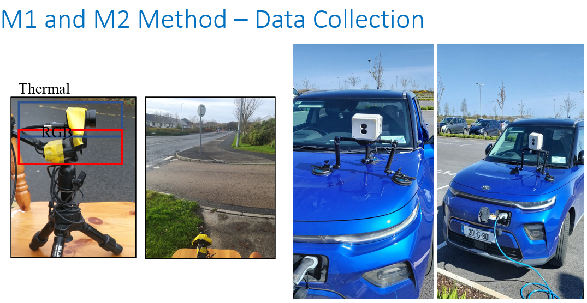
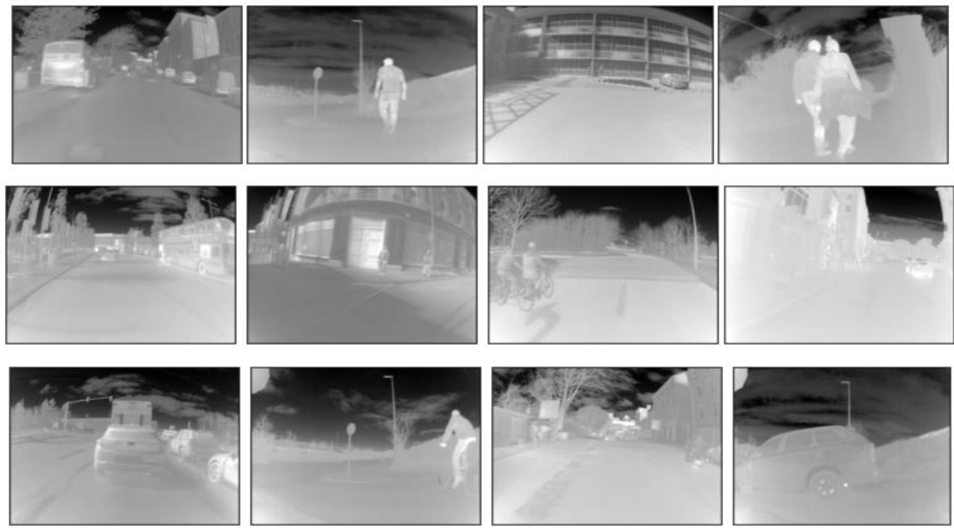
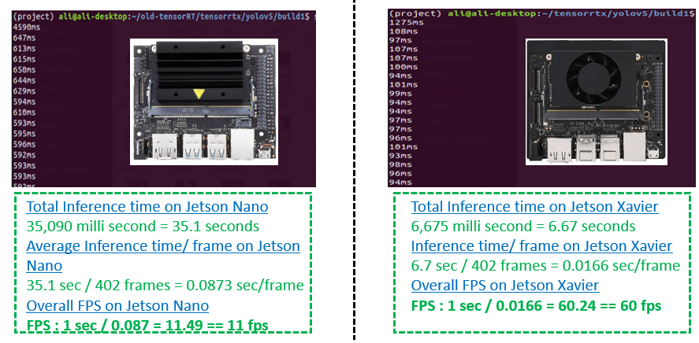
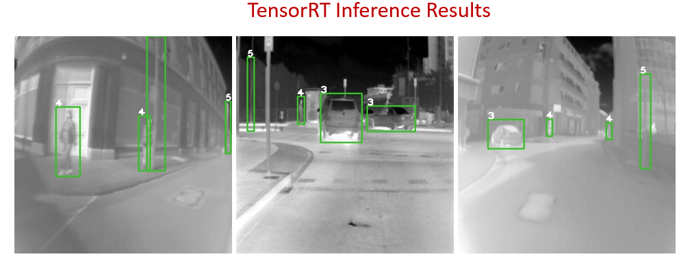

Effective Use of Long-wave Infrared Technology for the Development and Optimization of Deep Learning based Intelligent Thermal Vision Systems for Smart Vehicular Applications
2Xperi Corporation
Project Overview
Modern Advanced Driver Assistance Systems (ADAS) heavily rely on robust sensing capabilities. This research explores the potential usage of Long-wave Infrared (LWIR) thermal imaging technology for comprehensive vehicular safety application suites—spanning both out-cabin external perception and in-cabin driver/occupant monitoring.
By prototyping smart thermal systems utilizing custom 640x480 thermal cameras (developed by LYNRED France), we enable robust detection and classification of objects surrounding and within the vehicle. This project emphasizes the efficient real-time optimization and onboard deployment of deep neural network architectures onto resource-constrained embedded platforms.
Thermal Imaging Challenges & Pipeline
Training deep models on thermal spectrum frames presents unique constraints compared to conventional visible RGB datasets (e.g., lower resolution, fewer public annotations, non-uniform sensor artifacts). To address these limits, our end-to-end pipeline implements advanced hardware and software preprocessing:
- Automatic Gain Control (AGC): Corrects irregular gains caused by non-uniform thermal amplifiers using custom-designed gain maps.
- Bad Pixel Replacement: Identifies and dynamically maps faulty pixels using nearest-neighbor methods.
- Temporal & Spatial Denoising: Cancels random quantum noise across uncooled thermal sensors via frame averaging post-shutterless calibration.
- Mosaic Augmentation: Combines four diverse frames into one to enhance cross-scale convergence during deep network fine-tuning.

Figure 1: Complete data acquisition and processing architecture pipeline.
The C3I Thermal Automotive Dataset
To address the lack of diverse public thermal data, we open-sourced the C3I Thermal Automotive Dataset on IEEE Dataport. It features rigorous dual-stream data annotation containing stationary and moving objects in adverse environmental setups.
The multi-class dataset covers high-contrast targets across challenging visibility scenarios including Daytime Light Cloudy, Daytime Foggy/Windy, and Complete Night-time environments.


Deep Learning Detection & Path Trajectory Tracking
We successfully optimized state-of-the-art pretrained convolutional architectures (YOLO networks initially converged on COCO/ImageNet maps) using customized final layers and a One-Cycle learning rate scheduler.
Model Ensembling Inference Engine
To push performance boundaries on noisy test streams, we designed an ensemble-based inference architecture that merges outputs from multiple optimal models (YOLO X-Large, Large, and Small configurations).
91.29%
mAP (X-Large Model)
90.53%
mAP (Large Model)
90.43%
mAP (Small Model)
Multi-Object Path Trajectory Tracking
The fine-tuned detection variants are natively coupled with robust tracking algorithms (DeepSORT, FAIRMOT, StrongSORT) to maintain object identity vectors and map target paths under extreme low-light and occlusion conditions.
Edge AI Optimization & TensorRT Deployment
For practical onboard vehicular viability, models were deployed on resource-constrained computing hardware: NVIDIA Jetson Nano and NVIDIA Jetson Xavier NX.
Using NVIDIA's TensorRT Inference Accelerator, neural network layer graphs were restructured to maximize execution efficiency. Horizontal layer aggregation combined matching operational streams, while unused branches were trimmed.


Figure 2: Real-time detection and target tracking on embedded development stacks.
BibTeX Citation
If you use our dataset or models in your research, please cite our open-access IEEE Transactions on Intelligent Vehicles (T-IV) paper:
@ARTICLE{9732195,
author={Farooq, Muhammad Ali and Shariff, Waseem and Corcoran, Peter},
journal={IEEE Transactions on Intelligent Vehicles},
title={Evaluation of Thermal Imaging on Embedded GPU Platforms for Application in Vehicular Assistance Systems},
year={2023},
volume={8},
number={2},
pages={1130-1144},
keywords={Object detection;Cameras;Imaging;Image edge detection;Real-time systems;Feature extraction;Detectors;ADAS;object detection;thermal imaging;LWIR;CNN;edge computing},
doi={10.1109/TIV.2022.3158094}
@ARTICLE{9618926,
author={Farooq, Muhammad Ali and Corcoran, Peter and Rotariu, Cosmin and Shariff, Waseem},
journal={IEEE Access},
title={Object Detection in Thermal Spectrum for Advanced Driver-Assistance Systems (ADAS)},
year={2021},
volume={9},
number={},
pages={156465-156481},
keywords={Object detection;Detectors;Sensors;Deep learning;Meteorology;Training;Thermal sensors;Thermal-infrared;object detection;advanced driver-assistance systems;deep learning;edge computing},
doi={10.1109/ACCESS.2021.3129150}
}